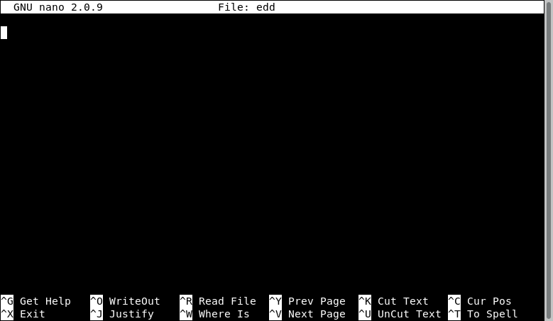

Editing Files¶
After learning a few commands the next thing to learn is to edit text files. As we will see later, editing small text files is a common procedure on a HPC cluster; the submission scripts are relatively small text files. Many scientific codes use text-based input files for running simulations. You need to know at least one basic editor to help you with those tasks.
There are several editors available on modern UNIX/Linux machines. The most widely used are vi, emacs and nano.
The standard de facto editor in UNIX is vi and a hacker favorite. The Single UNIX Specification (SUS) specifies vi, so every conforming system must have it.
The second most commonly used editor is emacs, sometimes not installed by default on many systems it is usually provided on most Linux distributions.
The third editor is GNU nano a very user-friendly editor. For this tutorial we will focus on nano, for editing short text files, this editor serves its purpose.
Opening GNU nano¶
On a terminal execute:
$> nano <name_of_file>
You will get a text application that looks like this:
Using GNU nano¶
The bottom two lines shows the commands to use.
The symbol ^ means press the CONTROL KEY (left or right) and keep it pressed until you press the command key. The character of the command is not case sensitive so pressing ^X is equivalent to ^x.
Executing commands with nano will sometimes change the list of subcommands, some of them are indicated like M-C, in that case M means the META character that in modern keyboards is indicated like Alt.
The command ^G display a complete list of keystrokes available from the main window. To exit from the help page, execute ^X
nano offers a farily complete set of basic utilities to edit files.
Search for text with ^W and the text to find.
The command ^_ allow you to go to a specific line number.
Copy, Cut and Paste¶
The command ^K and ^U only serve to cut and paste the line where the cursor is located. When you cut the text, its contents are stored in what is called the cut buffer. The command ^U just takes the contents of the cut buffer and write its contents to the location of the cursor. As the contents of the cut buffer are not erase you can use ^U to repeat the same contents as many times as you want.
For more advance copy and paste, you need to learn how to select blocks of text before cutting them to the cut buffer
First, move the cursor to the start of the text you want to select, press the M-A key combination (Alt-A in modern keyboards) to mark the start, then move the cursor to the end of the section you want to select.
Once you have marked the beginning and end of text, the ^^ (Esc-6) and ^K key combinations can be used to copy or cut it, respectively.
In a command like ^^, the meaning of that is press the Control Key followed by the carret symbol ^.
Quitting Nano¶
To quit nano, use the ^X key combination. If the file you are working on has been modified since the last time you saved it, you will be ask to save the file first. Type y to save the file, or n to exit nano without saving the file.